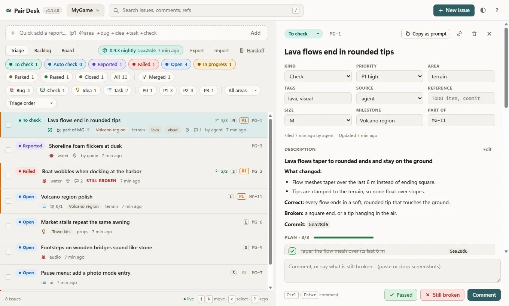

Local by default
One Python 3.11+ standard-library server that listens on 127.0.0.1 only. Requests from other machines, other Host names or other web pages get 403, which also stops DNS rebinding.
Free and open source For game developers and their coding agents
Pair Desk is a local playtest desk, backlog and handoff. Agents file checks with the command that takes you to the exact spot; one click teleports your running game there, and you answer Passed or Still broken. Their next prompt already knows.
Works with Claude Code, Codex, opencode, Google Antigravity and Meta Muse Code. Any engine.
# Pair Desk (MyGame): 1 new report, 0 failed checks, …
$ git commit -m "Round the lava flow tips"
[main 5ea28d6] Round the lava flow tips
create_issue MG-1 "Lava flows end in rounded tips"
commands: /goto 1240 -380 42.5 yaw 90; /time 17:30
set_status MG-1 to_check ✓
Pair Desk (MyGame): owner activity since this session last looked:
- MG-1 owner: STILL BROKEN (just now): "the east flow is still square"
set_plan MG-1 4 steps, + "Taper the east flow" ✓
$ git commit -m "Taper the east flow as well"
[main 8c21f0a] Taper the east flow as well
progress MG-1 step 4 done 8c21f0a ✓
set_status MG-1 to_check ✓
set_status MG-1 passed refused: only the owner gives that verdict
$
/goto 1240 -380 42.5 yaw 90; /time 17:30
the east flow is still square
all three are round now
polling the desk… nothing queued
> /goto 1240 -380 42.5 yaw 90; /time 17:30
An illustration. The desk card, tool calls and hook lines use Pair Desk's real wording; the game is a sketch.
Checks, reports, plans, the backlog and the handoff live in one place for every game you work on. A comment, verdict, plan tick or game report shows up in every open tab within a second.

Real captures of Pair Desk 1.13.0 with its sample desk (scripts/demo-desk.py), taken headless at 1360 × 820.
Agents forget everything between sessions. The desk remembers: what you reported, what failed, where work stopped and what not to try again.
auto_check is the agent's queue: screenshots, logs, tests and builds. Only what needs your eyes moves to To check.WorldStore.At session start the agent gets one line for the project linked to its folder, plus the handoff's next step and traps. Before every prompt it gets what you did since it last looked: comments, verdicts, new reports and status changes, at most twelve lines, newest first.
In Claude Code the desk can also push straight into a running session through a channel, so an idle agent sees your verdict right away.
When several agents share a folder, one of them should answer you. Name a lead client per project, and delegated subagents work from their brief instead of reacting to the owner.
# at session start
Pair Desk (MyGame): 3 new reports, 2 failed checks,
14 waiting for the owner, 1 auto_check waiting for
agent verification (screenshots, logs, tests)
Pair Desk handoff v12 (claude, 2026-11-04 09:12 UTC):
- Next step: damp the harbor docking spring in rain
- Traps: buoyancy runs at 50 Hz; never test at 144
# before the next prompt
Pair Desk (MyGame): owner activity since this session
last looked, newest first:
- MG-4 owner: STILL BROKEN (2 min ago): "the east
flow is still square"
- MG-9 new report from game (5 min ago): Stuck in the
rock near the harbor
- MG-2 owner: PASSED (12 min ago)# F12 in the game: file a report with the spot
POST /api/projects/mygame/issues
{ "title": "Stuck in the rock near the harbor",
"source": "game",
"location": { "command": "/goto 1240 12 -380 yaw 90" },
"attachments": [{ "data_base64": "iVBORw0…" }] }
# every 2 s while the dev console is on
GET /api/projects/mygame/commands/next?client=mygame
200 { "command": "/goto 1240 -380 42.5 yaw 90" }
204 nothing queuedPair Desk knows nothing about engines. A location is just your game's own console command: a teleport, the time of day, the weather, a seed for generated worlds.
Teach the game two small calls and the loop closes. A key press files a bug with a screenshot and the exact spot. While the dev console is on, the game polls for queued commands and runs them as if you typed them. Commands are delivered once and expire after ten minutes, so a later start never replays an old teleport.
When the desk isn't running, the requests just fail to connect; the game backs off quietly and never blocks play.
The installer finds the tools on your PATH, shows the exact steps for each, and asks before it runs them. It only touches its own entries, backs up every config file first, and uninstall removes exactly what it added.
The official plugin: MCP server, skills, session and prompt hooks, and the live channel.
MCP server and SessionStart and UserPromptSubmit hooks in config.toml, plus skills.
MCP server, a small plugin that adds the desk summary to the system prompt, plus skills.
A native agy plugin with MCP, session and pre-invocation hooks and skills.
MCP server and session and prompt hooks in Muse's settings, plus shared skills.
One Python 3.11+ standard-library server that listens on 127.0.0.1 only. Requests from other machines, other Host names or other web pages get 403, which also stops DNS rebinding.
A plain HTML and JavaScript UI under a strict Content Security Policy. No account, nothing phones home. Git sharing stays off until you configure it.
A SQLite file and your screenshots in one data folder. Upgrades migrate in place and never rewrite or remove anything; older versions keep working on a migrated file.
You need Python 3.11 or newer. The newest release is , from .
uvx --from git+https://github.com/rennerdo30/pair-desk pair-desk installpipx run --spec git+https://github.com/rennerdo30/pair-desk pair-desk installcurl -fsSL https://raw.githubusercontent.com/rennerdo30/pair-desk/main/install.sh | shirm https://raw.githubusercontent.com/rennerdo30/pair-desk/main/install.ps1 | iexAdd --dry-run to only see the steps, or name tools to limit it: install claude codex. The same command with update or uninstall does what it says. Read the scripts before you pipe them into a shell: install.sh, install.ps1.
# the installer offers to link the repo you are in,
# then prints this command with its full path:
pair-desk serve --open # http://127.0.0.1:8765/
# in Claude Code
/agent-pair-programming:serveCreate a project for your game with New project… in the desk (its issues become MG-1, MG-2, …), and your agents find it from the linked repository.
Want to look around first? python scripts/demo-desk.py --data <empty folder> writes a desk with sample data.